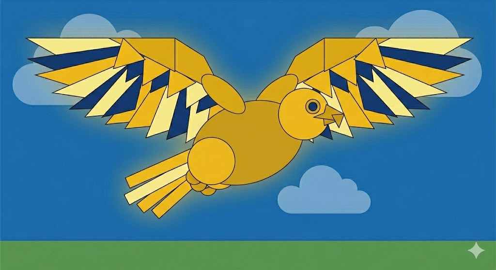

Imagen Programada (HTML5 Canvas)
Esta imagen se dibuja dinámicamente usando el código JS adjunto.
Imagen Original de Referencia
Esta es la imagen `image_4.png` utilizada como modelo.

Esta imagen se dibuja dinámicamente usando el código JS adjunto.
Esta es la imagen `image_4.png` utilizada como modelo.
